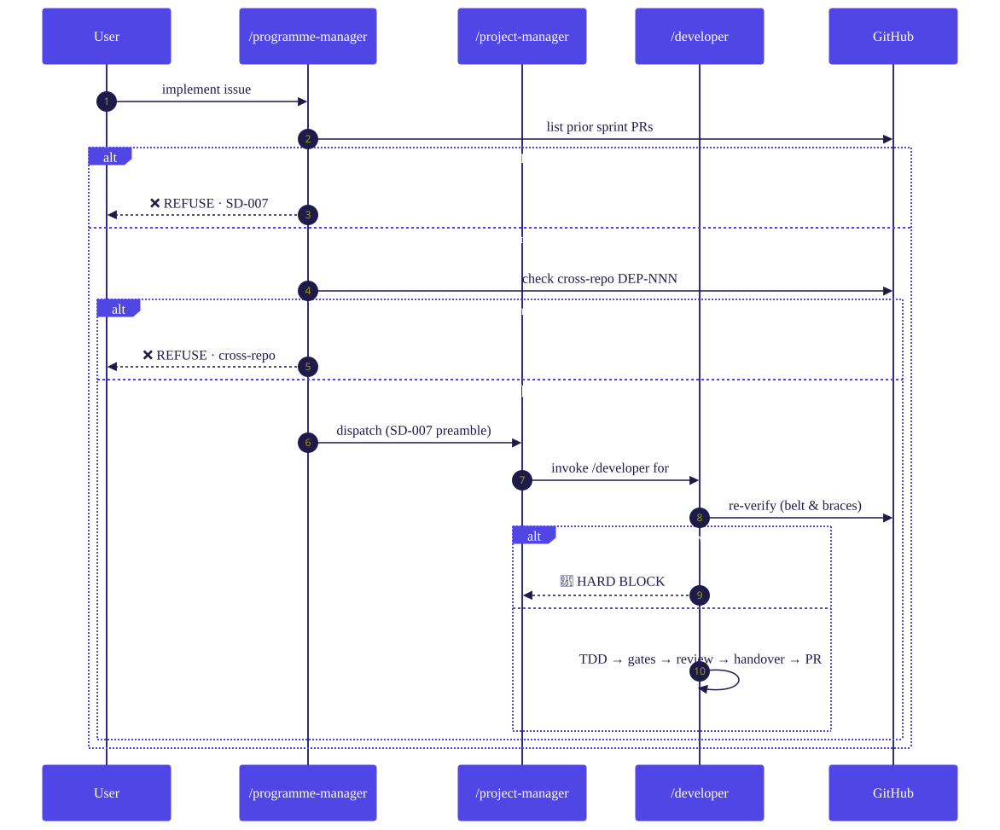

Five diagrams of the governed workflow behind 3C (Claude Code Coach) — the open-source framework that turns individual AI coding assistants into a team-aligned development pipeline.
The delegation chain between named roles. One /project-manager, context-aware across projects, orchestrating experts and the developer workflow.

The sprint lifecycle as a state machine — from backlog to retrospective, with the feedback loop that turns every sprint's lessons into next sprint's rules.

Six sequential gates — unit, build, lint, migration, headless E2E during implementation, and full-journey headed E2E at sprint close.

Five shared-context files encode the team's non-negotiables — each one injects into the specific lifecycle phases where the rules bite.

The SD-007 prior-issue merge gate. Two enforcement layers make interleaved-PR chaos structurally impossible.

Every retrospective adds a rule. Every rule loads into the right phase. Every phase has gates that can't be skipped. Every skipped gate becomes next sprint's rule.
The loop is the product. And it works the same whether you're one developer with an AI pair or a team of forty shipping to production every week.